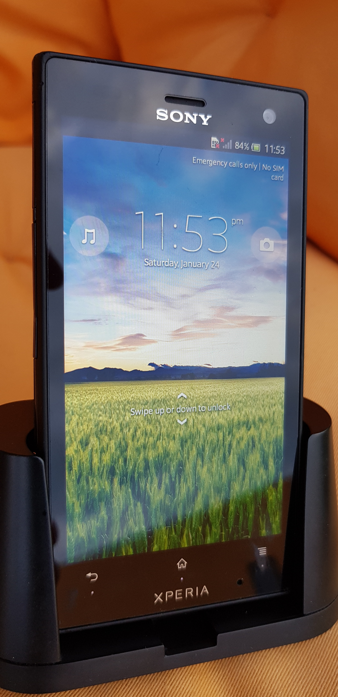

Sony Xperia acro S (sony-hikari)
|
 Sony Xperia acro S with its included dock | |
| Manufacturer | Sony |
|---|---|
| Name | Xperia acro S (LT26w) |
| Codename | sony-hikari |
| Released | 2012 |
| Category | testing |
| Original software | Android 4.0 (Ice Cream Sandwich), Linux 3.4.0 |
| Hardware | |
| Chipset | Qualcomm Snapdragon S3 (MSM8260) |
| CPU | 2x 1.5 GHz Scorpion |
| GPU | Adreno 220 |
| Display | 720 x 1280 |
| Storage | 16 GB |
| Memory | 1 GB |
| Architecture | armv7 |
{kind=link}
Status: Uses unusual ELF-format boot.img that is not supported by pmOS
| USB Networking | |
|---|---|
| Flashing | |
| Touchscreen | |
| Display | |
| WiFi | |
| FDE | |
| Mainline | |
| Battery | |
| 3D Acceleration | |
| Audio | |
| Bluetooth | |
| Camera | |
| GPS | |
| Mobile data | |
| SMS | |
| Calls | |
| USB OTG | |
| NFC | |
| Accelerometer | |
|---|---|
| Magnetometer | |
| Ambient Light | |
| Proximity | |
| Hall Effect | |
| Barometer | |
| Power Sensor | |
| Camera Flash | |
|---|---|
| Keyboard | |
| Touchpad | |
| USB-A | |
| HDMI/DP | |
| Ir TX | |
| Ir RX | |
| Stylus | |
| Haptics | |
| Ethernet | |
| FOSS bootloader | |
Contents
Contributors
What works
This device uses a non-standard ELF format boot.img file that is not supported by postmarketOS (yet):
% file boot.img boot.img: ELF 32-bit LSB executable, ARM, version 1 (ARM), statically linked, corrupted section header size
intgr has a working hacked postmarketOS toolchain for building compatible boot.img files.
What does not work
Booting.
Downstream kernels
After trying out tens of different combinations of kernel sources from the web, I couldn't find any that get as far as initramfs.
The best sources found manage to initialize the display backlight and then crash pretty late in the initialization process with error: (see dmesg)
BUG: Bad page state in process swapper/0 pfn:5dcba
WIP can be seen here: https://gitlab.com/intgr/pmaports/compare/master...device-sony-hikari
Mainline kernel
No peripherals supported yet, but /dev/last_kmsg can be extracted with a binary kernel (e.g. TWRP). Sadly the boot process appears to hang after executing /init: (see dmesg)
WIP can be seen here: https://gitlab.com/intgr/linux-postmarketos/compare/master...device-sony-hikari
How to enter flash mode
Power off the device. Hold Volume Up as you plug the USB cable into the device.
Alternatively, perform a hard reset by holding Power and Volume Up buttons. When the device vibrates, release the Power button *first*, and it will boot into fastboot loader.